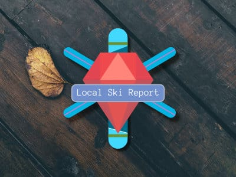

Registration Form

Skills Used
- HTML5
- CSS3
- Responsive Design
- text input
- email input
- radio inputs
- text field's
- checkboxes
- selects
Project Description
In this project, I built a mobile first, responsive registration form using a variety of HTML form input types and attributes. The project was designed from a supplied visual mockup for a mobile and desktop layout. The layout was designed for mobile first and using CSS media queries to change the layout of the form and page as the viewport widens.
The form was enhanced using HTML5 validation properties to make sure required fields are filled out and formatted correctly. Utilizing CSS property transition and pseudo-states, I added effects for highlighting the look of the form fields when they are 'focused' on and grow and shrink on changing of the viewport.

Photo Gallery

Skills Used
- HTML5
- CSS3
- Responsive Design
- JavaScript
- Velocity.js
Project Description
In this project, I created an interactive photo gallery using JavaScript. The page is built using a mobile first, responsive design. The top of the page has a search field that takes a user's supplied 'keywords' and using JavaScript filters the images based on title and description.
This project was coded entirely in vanilla JavaScript. This project followed courses on JavaScript Basics as well as jQuery Basics. I decided to not use jQuery for this project so that I could strengthen my understanding of JavaScript.
A custom lightbox modal was built from scratch and is dynamically added to the HTML on the page using DOM manipulation. The lightbox appears on an event click by the user on the thumbnail images, it contains a photo description, and buttons to page through all photos in the gallery. The animations are handled by Velocity.js.
Interactive Video Player
Skills Used
- HTML5
- HTML5 Video | Audio
- Web API
- CSS3
- Responsive Design
- JavaScript
- jQuery
Project Description
This project was built with JavaScript and jQuery using the HTML5 video and audio elements and their media API. The video players UI was laid out using supplied icons and SVG icons that I designed.
Functionality was added using a mixture of jQuery and JavaScript. Controls display and hide to the user on a cursor hover in or out of the video player area, The video player synchronizes the playback and transcript. The transcript not only highlights the play progress of the video but also is interactive and responds to a users click.
This project followed courses of study on OOP JavaScript, interactive web pages with JavaScript, and HTML video and audio elements.
Web App Dashboard

Skills Used
- HTML5
- CSS3
- Responsive Design
- JavaScript
- jQuery
- Charts.js
- Git
Project Description
This project is modeled after sites which supply users with information about their accounts, sites like GitHub, Zillow, Mint, and even Treehouse. This web app dashboard project is a visual representation of a users control panel. It is built with mobile first, responsive techniques. Using media queries, the site content moves and shifts to accommodate the viewport of all devices while maintaining a visually nice looking and usable interface.
JavaScript and jQuery are used for the functionality that drives the charts, graphs and forms submissions. The widgets for web traffic are displayed with multiple graphs across the app. They're designed with Charts.js and the data is added within the JS file since there is no backend database. The settings section of the app allows a user to change settings and then saves those settings using the localStorage Web API.
This project followed courses on using Git, Github, and the console. It is hard to imagine coding now without the use of a VCS. This was also one of the most challenging projects to date. It taught me the importance of good documentation and searching through that documentation to learn and utilize a technology like Charts.js. The layout was the most complex site I've made so far as well. Although challenging, it was the most rewarding and enjoyable project this far in the techdegree program.
API Gallery

Skills Used
- HTML5
- CSS3
- Responsive Design
- JavaScript
- jQuery
- jQuery Plugin
- Flickr API
- Spotify API
Project Description
Note: This application no longer fully working due to Spotify no longer maintaining a public API. A developer API is now required to be securely stored and used for requests.
Application Programming interfaces allow you to work with microservices and databases to build useful tools and access relevant information. The API Gallery project works with public API's from both Spotify and Flickr. Those API's allow a user to request and use large sets of data from both of those services.
This project uses JavaScript, jQuery and AJAX requests to display API response data from both services and display photos and album artwork in an attractive gallery layout.
The galleries are built by making an AJAX, asynchronous JavaScript and XML request. The request responds with data from both services using their API endpoints. The gallery layout is a grid of thumbnails and uses a jQuery Plugin, lightbox 2, to display full-size images from Flickr and Album artwork from Spotify. The Flickr data includes titles and descriptions of photos, and Spotify data includes artist names and album titles. Both Pages include buttons to sort and filter the data results in the gallery.
Site Optimization

Skills Used
- HTML5
- CSS3
- Responsive Design
- Node
- NPM
- Gulp.js
Project Description
Is there anything more important than website performance? It can be a great Web APP but if it is a bandwidth 'hog' a majority of potential users may be unable to use the Apps functionality as it was intended. How about these numbers, 47% of users expect a page to load in 2 seconds, or less. And 40% of users abandon a site if it takes greater than 3 seconds to load, 79% of users unhappy with a shopping sites performance will be less likely to return.
With this Project, I applied the skills and tools I learned for optimizing images, HTML, CSS, and JavaScript to take a poorly optimized page and reduce the total load size to under 1.3mb and to improve overall performance.
Prior to optimization, this website made over 43 server requests, had 11mb worth of data being transferred and took over 20 seconds to load. Using best practices and tools such as, Chromes Developer panel and Gulp.js I made major reductions to those numbers. The final project makes only 22 requests, transfers 920kb, and loads within under 500ms.
Ruby Gem: Local-Ski-Report

Project Description
Local Ski Report is a CLI Ruby gem for finding the most recent ski report from a selected ski area or resort in North America. It uses the Nokogiri gem to scrape the most recent data from the website www.onthesnow.org. This project was the first of six final projects required for graduation at Flatiron School full stack developer program. It followed lessons in HTML, CSS, Procedural Ruby, Object Oriented Ruby Programming.
The interface helps the user find the desired ski area by narrowing down choices by region and state. The report is displayed in a table based layout utilizing the Terminal-table gem for formatting data. The report has an initial listing which includes, number of slopes open, recent snowfall and this data can be expanded with a command of 'more'. I'm currently in the process of adding 3-day weather forecast to the gem.
Rails App: HikeIt
Skills Used
- Ruby OOP
- Ruby On Rails
- Omniauth Facebook
- Devise
Project Description
HikeIt is social hiking meetup application that allows users to plan a hiking trip or join other users on their hiking adventures. The app was planned to help hikers find others with a shared interest and to function as an informative resource about the trails in the National Parks. The app currently has an extensive list of all official trails of the GSMNP which is presented in a table layout that includes details about a trail's difficulty rating, location, round-trip distance, and more.
Hikeit was built with the Ruby on Rails framework, supported by a number of Gems including Devise and Omniauth for user authentication and authorization, and Twitter Bootstrap as the front end framework. A blog post with more information can be found here and a video demonstration of the app can be found here.
Sinatra App: Auction Calendar
Skills Used
- Ruby OOP
- Sinatra
- ActiveRecord ORM
Project Description
Auction Calendar is an application for auction businesses and auctioneers to manage their upcoming sales and staff. It allows registered users to schedule upcoming sales and assign auctioneers to those sales. Auction creation is handled through forms and includes nested forms to assign auctioneers during the scheduling process and add new staff.
Auction calendar was built following the extensive curriculum at Flatiron school with areas of study in procedural Ruby, Object Oriented Ruby, SQL, Sinatra and the underlining technologies like Rack. This application utilizes ActiveRecord and ORM ( Object Relational Mapping ) techniques. It is a stand-alone application in its current state but designed with the intention to serve as a CMS and admin panel for auction sites.
A blog post about with more information about this app can be found here here, and a video demostration of the app can be found here.
React | Redux | Rails: Forest Dhamma
Skills Used
- Rails API Mode
- Active Model Serializer
- Ruby OOP | ORM
- React
- Redux
- Thunk middleware
- CSS Flexbox
Project Description
The final project for the Flatiron School Bootcamp called for me to utilize all skills learned during my time in the program. Leveraging my knowledge of building Rails backend programs, I built a PostgreSQL database to store associated data and serve that to data as JSON formatted responses using Active Model Serializer gem.
The application I built is named, 'Forest Dhamma'. Where the API Rails backend serves and stores associated model data of talks from the International Thai Forest Buddhist monasteries, the front-end is built using React and Redux and functions as an audio player for the talks.
Aside from functioning as an audio player, the application allows a user to 'tag' talks by assigning it a category which will be used to filter talks by in a future update. The monasteries are sorted by React in order of the user likes they accumulate.
I have also added a form to allow users to upload their own favorite talks to the database along with API documentation to explain to the user how to access the database endpoints for contributing and to utilize the resources for their own projects. A Video demonstration can be viewed here.
Tribute Page
Project Description
The first portfolio project for the front end certification at Free Code Camp online boot camp. In this project, the student is tasked with building a single page website that is a tribute to a person, an invention, or something that inspires the student.
I chose to build a tribute page about Muhammad Ali. I started this project the week after Muhammad Ali's passing and felt that his life was one in which all people can draw inspiration from.
This is a simple single page site using HTML and Custom CSS styles.
Random Quote Generator
Skills Used
- HTML
- CSS3
- JavaScript
- jQuery
Project Description
The second portfolio project for the front end certification at Free Code Camp online boot camp. In this project, the student is tasked with building a single page website that
uses JavaScript, HTML, and CSS to randomly select and render a quote into the site content.
The project requirements are: clicking on a button will dispaly a new random qoute, a button can be pressed to tweet out the quote.
Local Weather
Skills Used
- HTML
- CSS3
- JavaScript
- jQuery
- FCC WeatherAPI
Project Description
The third portfolio project for the front end certification at Free Code Camp online boot camp. In this project, the student is tasked with building a single page web app that displays the user's current weather based on location.
The project followed the user story requirements: I can see the weather in my area, I can see a different icon depending on the weather, I can push a single button to toggle between Fahrenheit and Celsius temperatures.
This app was built with HTML, CSS, JavaScript, and jQuery. I utilized the HTML5 geolocation API to retrieve a users location information. Once that information was collected using JavaScript, I used jQuery's .ajax() method to make an XMLHttpRequest to the FreeCodeCamp WeatherAPI. The response from that request is parsed and used to update the weather component rendered on the webpage.